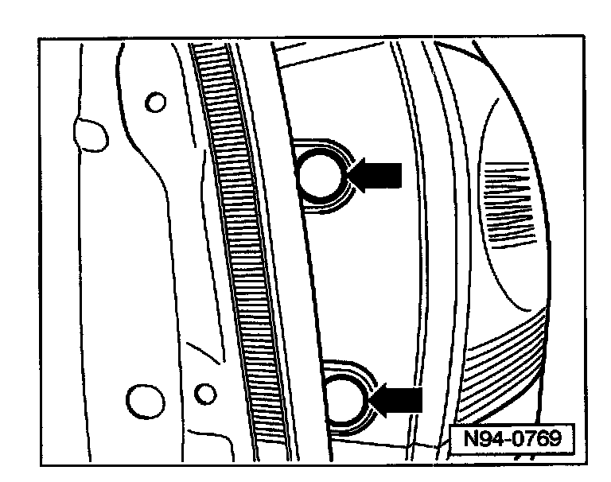
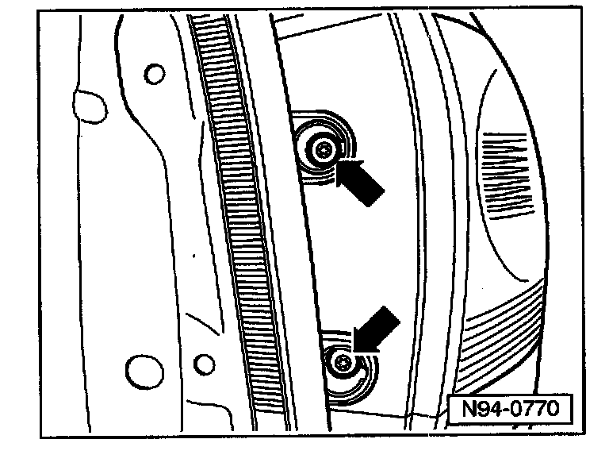
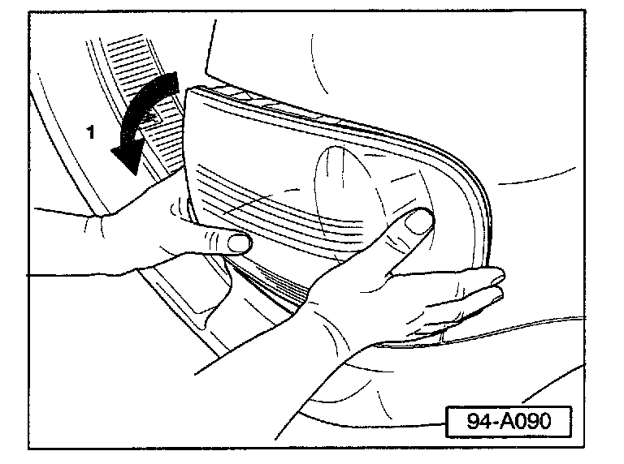
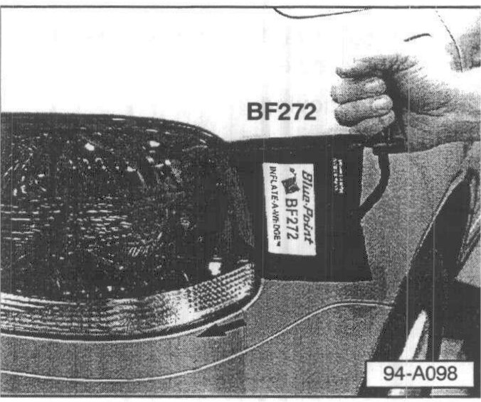

Lighting - Tail Light Removal Procedure
Group: 94Number: 04-02
Date: Aug. 5, 2004
Subject:
Tail Light Assembly, Removal Procedure
Model(s):
Touareg 2004
Supersedes T.B. Group 94 number 03-03 date Sept. 30, 2003 due to removal of production Information and tool update.
Condition
If care is not taken, tail light assemblies may break during removal process.
Service
If repair requires tail light removal, use the following procedure:
Tail light, Removing
- Open rear lid.

- Remove screw head trim covers -arrows-.

- Remove Torx screws with Torx screw driver.
Note:
In addition to the screws, the rear light housing is secured by a ball head in a securing clip, finish removal as follows.

- Turn tail light in direction of -arrow- towards outboard side of vehicle until upper edge of tail light housing becomes visible.
With tail light tipped out:

- Insert the edge of BluePoint Inflate-A-wedge(TM) tool (BF272) (available from your local SNAP-ON* dealer or from Equipment Solutions) between the body and outer edge of the tail light as shown.
Note:
It may be necessary to pull the edge of the tail light away from the body slightly by hand to allow wedge tool to slide between the light and the body.
- Hold tail light with one hand and squeeze the bulb of the Inflate-A-wedge(TM) tool (BF272) as necessary until tail light is released
- Disconnect wiring harness from the tail light assembly.
*) SNAP-ON, BLUE POINT, are registered trademarks of Snap-on Incorporated in the United States.